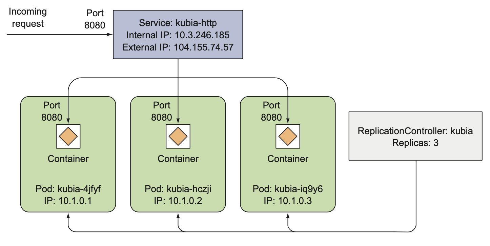

此博客主要关于 Kubernetes in Action 书籍过程中笔记
1 Kubernetes背景

1.1 理解kubernetes的需求
早期的单体应用缺点：
- 牵一发而动全身（开发、发布、…)；
- 运行在少数可以提供计算能力的高性能服务器上；
- 系统扩容，垂直扩容（不需要改变程序）增加硬件资源，例如cpu，存储等，但有上限；水平扩容（需要改动代码，增加服务器运行服务的副本）困难；如果某个组件不能扩容，则整个服务不可扩容。
基于上述问题，需要将单体服务拆为微服务，每个微服务作为独立的程序运行，互不影响，之间通过API通信，如下图所示。微服务通信通过同步同步协议，例如HTTP，或者异步协议，例如AMQP（Advanced Message Queueing Protocol）。每个微服务可以用不同的语言开发。

微服务扩容是基于每个微服务的，也就是说可以只扩容需要扩容的微服务。有些服务可以水平扩容，有些可以垂直扩容，如下图所示。

微服务存在缺点：
- 微服务多的时候，开发和部署变得麻烦，因为需要了解各个服务之间的依赖关系，容易出错；
- 跟踪调试问题变得困难，因为不同的微服务可能在不同的服务器上。
微服务开发和部署可以独立进行，也就是说不同的微服务可以由不同的团队负责，这样不同的微服务环境依赖存在差异是必然的，如下图所示。在相同的服务器上部署的微服务越多，将是越困难的去提供满足所有微服务的依赖环境。

开发环境和生产环境的差异性（包括硬件，系统，软件库等），以及生产机器环境的变化是实际中需要处理的问题。解决方法是开发环境和生产环境一致，开发者部署服务，op管理硬件等资源。因此Kubernetes登场了，Kubernetes对实际硬件做抽象，然后将自身暴露成一个平台，用于部署和运行应用程序。它允许开发者自己 配置和部署应用程序，而不需要op的任何帮助 让op聚焦于保持 底层基础设施运转正常的同时，不需要关注实际运行在平台上的应用程序。
1.2 容器技术
Kubernetes使用Linux容器技术隔离应用程序。运行在容器里面的进程实际运行在宿主机的操作系统上（可以看成宿主机上的一个进程，和虚拟机VM不一样，VM里的进程是运行的独立的操作系统）。下图对比了VM和容器运行多个微服务，由于VM比较吃资源，一台机器不会有很多VM，所以需要将微服务分组，分别在VM里面运行；容器比较轻量，每一个容器可以用来跑一个微服务。

运行在虚拟机里的应用程序会执行Guest OS的系统调用， 然后VM内核会通过管理程序在宿主机上的物理CPU执行x86指令。

所有的容器在宿主机上的内核执行系统调用，CPU不需要做任何虚拟化（这点和VM不一样），下图显示了VM中的应用和容器中的应用使用CPU的差异。


总结容器和VM的差异如下：

容器实现隔离的机制：Linux namespaces和Linux control groups (croups)。
Linux namespaces: 使得每个进程只看到自己的系统视图（files, processes, network interfaces, hostname, and so on）；
Linux control groups: 限制进程消耗的资源（CPU，内存，网络带宽等等）；
Docker容器镜像是由层组成，每一层可以被共享或者重复利用。Docker主要有3个部分：
- 镜像：包括应用程序和其依赖的环境，其他的元数据，例如可执行文件（镜像运行的时候会执行的）的路径；
- 仓库：存放Docker容器镜像，方便用来共享镜像；
- 容器：基于镜像的Linux容器，一个正在运行的容器是运行Docker宿主机上的一个进程（和其他进程完全隔离）。
下图显示了构建，发布，运行Docker镜像的流程：

Docker容器和虚拟机的差异如下图所示：


图中可以看到，app A和app B可以访问相同的二进制文件和库，对于VM显而易见（因为都在同一个操作系统里面），但是容器都有其自己隔离的文件系统，为什么会这样呢？因为Docker镜像是由层组成，不同的镜像可以包含相同的层（底层），层的好处包含加速镜像发布效率，节约存储空间（每一层只会存储一份）。所以基于不同的镜像运行的Docker容器可以读相同的文件（这些相同的文件就是底层），但是一个容器写这些文件，另一个容器是不能看到修改后的变化的，因此容器之间是互相隔离的（This works because container image layers are read-only. When a container is run, a new writable layer is created on top of the layers in the image. When the process in the container writes to a file located in one of the underlying layers, a copy of the whole file is created in the top-most layer and the process writes to the copy）。
容器镜像的限制：运行在宿主机上的容器共享宿主机上的Linux内核，如果容器需要的内核版本和宿主机上的不同，容器可能不能正常工作，同时也会受到硬件架构的影响（比如x86和ARM），VM没有这种限制，因为VM有其自己独立的内核。
Docker本身并不能提供隔离，只是利用Linux namespaces和Linux control groups (croups)，Docker只是容器的一种，还有其他容器，后面只是针对Docke进行说明。
1.3 Kubernetes介绍
当机器规模大了后，即使利用率小的改善也会带来可观的收益。早期谷歌内部开发了Borg和Omega系统，后来在2014年，基于早起的经验，谷歌开源了Kubernetes（一个软件系统，抽象硬件资源，使其容易发布管理基于容器的应用）。
下图显示了Kubernetes的简单视图，由一个master节点和众多worker节点组成。开发者提交软件清单到master节点，Kubernetes将其发布到worker节点的集群。

节点是Kubernetes里的最小计算单元，可以理解为一台机器，是物理机或者虚拟机。
可以将Kubernetes看出集群的操作系统，Kubernetes提供一些基础服务包括：服务发现，扩容，负载均衡，自愈，甚至领导选举等。同时Kubernetes可以对应用重新分配，提高资源的利用率。
下面开始介绍Kubernetes集群的架构。

在硬件层面，Kubernetes集群由许多节点组成，分为两类，master节点和worker节点。
- master节点：承载着控制和管理整个Kubernetes系统的
Kubernetes Control Plane - worker节点：运行部署的实际的应用
The Control Plane用来控制集群，使集群生效，其由多个组件组成，可以运行在一个单独的master节点上，或者通过副本运行在多个主节点上以确保高可靠性。这些组件包括如下：
- The Kubernetes API Server：你和其他的控制面板组件都需要通信的；
- The Scheduler：调度apps，为应用的每一个部署微服务（或者说是组件）分配一个工作节点；
- The Controller Manager：执行集群级别的功能，例如复制组件，持续跟踪工作节点，处理节点失败等等；
- The etched：一个可靠的分布式数据存储，可以持久化存储集群配置；
控制板的组件保持和控制集群的状态，他们并不运行任何应用程序，应用程序是通过工作节点来运行的。对应用程序提供运行，监控和服务的任务是由以下组件完成：
- Docker, rkt, or another container runtime, which runs your containers
- The Kubelet：与API Server通信，管理所在节点的容器
- The Kubernetes Service Proxy (kube-proxy)：负责组件之间的负载均衡网络流量
在Kubernetes中运行一个应用。流程：将应用打包成一个或多个镜像–>将镜像推倒镜像仓库–>给Kubernetes API server推送一个描述文件。描述文件包括容器镜像信息，多少副本，哪些需要运行在同一个节点上等等。

当API server处理应用的描述文件时，the Scheduler基于每组容器需要的计算资源以及工作节点非分配的资源调度指定组容器运行在可用的节点上。在节点上的Kubelet指示Container Runtime（例如Docker）拉取容器镜像并运行容器。
保活：一旦应用运行起来，Kubernetes会持续确保部署的应用状态会满足描述文件里规定的。例如，如果在描述文件里面指定一个服务有5个副本运行，则Kubernetes总是确保有5个副本服务运行，一旦某个服务意外死掉了，则Kubernetes会自动重启服务。如果整个工作节点死掉或不可访问了，Kubernetes会在新的节点上运行在死掉节点上的所有容器。
扩容：当应用在运行的时候，可以决定增加或者减少副本的数量。甚至可以让Kubernetes决定最优的副本数量，Kubernetes会基于实时指标，例如CPU负载，内存使用，每秒查询量等调整副本的数量。
命中移动目标：当Kubernetes在集群里面迁移容器（例如运行容器的节点死掉，或者给其他容器挪空间而从一个节点摘除），如果容器给其他容器或者外部的客户端提供服务，如何正确使用正在迁移的容器呢？客户端如何连接到提供服务的容器（提供服务的容器被复制被分散到整个集群）？为了让客户端容易找到提供特定服务的容器，可以告诉Kubernetes哪些容器提供相同的服务，Kubernetes会通过一个静态的IP地址暴露所有的提供特定服务的容器，并将改地址暴露给集群里运行的应用。静态IP地址通过环境变量提供。The kube-proxy确保连接到提供特定服务的容器是负载均衡的。由于IP地址是固定的，因此客户端总是可以连接到，即使在容器在集群里迁移的时候。
使用Kubernetes的好处：
- 简化应用部署
- 实现更好的硬件利用率
- 健康检查，自我修复
- 自动扩缩容
- 简化应用的开发
2 Docker和Kubernetes的第一步
2.1 创建，运行及共享容器镜像
在Kubernetes里面运行的容器镜像需要被打包成容器镜像。首先对Docker的使用做简单的介绍。
首先需要在Linux机器上安装Docker，如果不是Linux系统，需要安装Linux虚拟机运行Docker，如果是Mac或者Windows系统，Docker会自己启动一个虚拟机，并在其中运行Docker守护进程。Docker客户端可执行文件可以在宿主机系统上运行，并与在虚拟机中的Docker守护进程通信。
安装官方地址：http://docs.docker.com/engine/installation/，完成安装后，使用Docker客户端完成各种Docker命令。 下面命令运行busybox镜像并打印 Hello world
1 | sudo docker run busybox echo "Hello world" |
结果如下
1 | Unable to find image 'busybox:latest' locally |
下图显示了上述Docker run命令的执行流程

运行Docker镜像命令如下（最基本的，没有加参数或者命令）
1 | sudo docker run <images> 或者 sudo docker run <image>:<tag> |
将应用打包为一个镜像，首先需要创建一个Dockerfile文件，Dockerfile文件包含一系列Docker构建镜像时候会执行的指令。编译镜像的命令如下：
1 | sudo docker build -t <image_name> . |
下图显示了上面docker build命令的执行流程

build命令告诉Docker基于当前目录里的内容构建一个
Docker镜像是由很多层组成，不同的镜像可以共享某些层。镜像中的每一层只会存储一份。构建镜像的过程中，基于Dockerfile文件里的每一行命令都会在最上面创建一个新的层，下图显示了构建镜像过程中层的关系

列举本地所有的镜像命令如下
1 | sudo docker images 或者 sudo docker image ls |
运行容器镜像也可以加一些参数，例如
1 | sudo docker run --name kubia-container -p 8080:8080 -d kubia |
- –name: 指定新运行容器的名字
- -d: 后台进程运行
- -p: 端口映射（本机端口:容器端口）。可以通过本机地址8080端口访问，如果是在虚拟机中运行Docker守护进程，需要指定虚拟机的IP或者hostname
下面的命令列举所有正在运行的容器
1 | sudo docker ps # 只是显示最基本的信息 |
显示详细信息的命令如下
1 | sudo docker inspect <container_name> |
由于在一个容器里面可以运行多个进程，因此可以运行一个进程（例如shell，如果有的话）进入到一个正在运行的Docker容器里面。例如可以运行下面的命令
1 | sudo docker exec -it <container_name> /bin/bash # exit可以退出一个容器 |
上述命令中的bash进程会有相同的Linux namespaces和主容器进程
- -i: 确保 STDIN 被打开
- -t: 分配一个伪终端
进入到一个正在运行的容器中后，运行下面的命令可以查看在容器里运行的进程
1 | ps aux |
在宿主机上打开终端运行下面的命令，可以看到在容器里运行的进行
1 | ps aux | grep openjdk-11 |
上面结果证明了在容器里面运行的进程也在宿主机上运行。但是容器里面的进程和宿主机上的相同的进程有不同的PID，因为容器使用其自己的 PID Linux namespace，有一个完全隔离的进程树（独立的 PID number序列）
类似的，容器的文件系统，网络接口等都是隔离的。
停止一个容器，首先停止容器中运行的主进程，然后停止容器。
1 | sudo docker stop 容器名字/容器ID |
删除一个容器
1 | sudo docker rm 容器名字/容器ID |
给镜像重命名（下面将busybox重命名为label/busybox）
1 | sudo docker tag busybox label/busybox |
注意：不是重命名已有的镜像tag，而是对相同的镜像创建一个可选的名字，如下图所示（有相同的镜像ID）
1 | REPOSITORY TAG IMAGE ID CREATED SIZE |
将镜像推倒远程仓库（之前需要 docker login）
1 | sudo docker push label/busybox |
2.2 配置Kubernetes集群
接下来介绍2种简单的方式构建可运行的Kubernetes集群：在本机上运行的单节点的Kubernetes集群和访问一个运行在 Google Kuberne- tes Engine (GKE) 上的托管集群。当然还有其他的方式安装集群，例如利用kubeadm工具和kops工具（AWS）。
首先是利用Minikube工具在本机上运行一个单节点的Kubernetes集群，Minikube是最简单，最快捷的运行Kubernetes集群的方式。Minikube是一个构建单节点集群的工具，对于本地开发和测试Kubernetes集群都很有帮助。
Minikube是一个需要下载并放到路径中的二进制文件，地址是http://github.com/kubernetes/minikube，例如在Linux系统上，利用下面命令进行下载和配置：
1 | curl -Lo minikube https://storage.googleapis.com/minikube/releases/v1.15.0/minikube-linux-amd64 |
启动Kubernetes集群之前需要安装virtualbox或者kvm2
首先检查机器处理器是否支持虚拟化
1
2egrep -c '(vmx|svm)' /proc/cpuinfo
4如果输出0，表示cpu不支持硬件虚拟化；输入大于0的值，表示支持，但是依然需要确保虚拟化使能。
查看cpu是不是64位的，以及查看正在运行的内核版本是不是64为的命令如下
1
2
3
4egrep -c ' lm ' /proc/cpuinfo
4 # 输出0表示cpu不是64位的，大于等于1表示是64位的
uname -m
x86_64 # 输出x86_64表示正在运行的内核版本是64位的安装KVM
1
2
3
4
5
6
7
8
9sudo apt-get install qemu-kvm libvirt-daemon-system libvirt-clients bridge-utils # 安装依赖包
sudo adduser `id -un` libvirt # 将用户添加到libvirtd
用户"yangliuqing"已经属于"libvirt"组。
sudo adduser `id -un` kvm # 将用户添加到KVM组
正在添加用户"yangliuqing"到"kvm"组...
正在将用户“yangliuqing”加入到“kvm”组中
完成。
groups # 检查是否添加成功
yangliuqing adm cdrom sudo dip plugdev kvm lpadmin lxd sambashare libvirt验证是否安装成功
1
2
3virsh list --all
Id Name State
--------------------
用下面的命令启动Kubernetes集群
1 | minikube start |
安装kubectl客户端
1 | curl -LO https://storage.googleapis.com/kubernetes-release/release/$(curl -s https://storage.googleapis.com/kubernetes-release/release/stable.txt)/bin/linux/amd64/kubectl |
验证集群是否工作
1 | kubectl cluster-info |
下面说明了如何和Kubernetes集群交互（3个节点）

每一个节点都运行Docker、Kubelet、kube-proxy，通过kubectl客户端和集群交互。
列举集群中的节点
1 | kubectl get nodes |
查看某个Kubernetes对象的详细信息，不加对象的名字，输出所有对象的信息
1 | kubectl describe node minikube |
2.3 在kubernetes上运行第一个程序
Pod: 一组紧密相关的容器，它们总是一起运行在同一个工作节点上，以及在同一个Linux命名空间。
每一个Pod像一个独立的逻辑机器，有其自己的IP，主机名，进程等，运行一个独立的应用。一个Pod里面的所有容器，似乎运行在相同的逻辑机器上，在其他Pod里面的容器（即使实际运行在同一个工作节点上）似乎运行在不同的逻辑机器上。下图显示了Pod，容器和节点间的关系。

Kubernetes中不能列举单个容器，但是可以列举Pods，用如下命令
1 | kubectl get pods |
查看Pod的详细信息
1 | kubectl describe pod kubia |
下图显示了在集群上运行容器镜像的过程

分2步，第一步是构建镜像，并将其放到仓库中；第二步，通过kubectl在集群上运行容器镜像。
访问一个Pod，首先需要通过一个服务对象暴露Pod的IP地址，命令如下
1 | kubectl expose rc kubia --type=LoadBalancer --name kubia-http # rc表示 replicationcontrollers |
查看Kubernetes上的服务对象
1 | kubectl get services |
下图总结了本小节提到的Replicationcontroller，Pod和服务的关系

- Pod和容器：Pod里面可以包含任意个容器（上面图中是一个），Pod有其自己独立的IP和主机名
- Replicationcontroller的角色：确保总是有指定数目的Pod实例在运行（图中是一个），一般来说Replicationcontroller用来创建多个Pod的拷贝，如果由于某些原因Pod消失了，则Replicationcontroller创建一个新的
- 为什么需要服务：当Pod由于某些原因消失了，被Replicationcontroller创建一个新的替代，则新的Pod有新的IP，主机名等，这时候服务确保某一个Pod收到客户端的连接，（服务的IP是固定的，不会变化）。服务表示一个静态的位置对于一个或者多个提供相同服务的Pod
上面的Pod被Replicationcontroller管理，通过下面的命令查看Pod的数目
1 | kubectl get replicationcontrollers |
通过下面的命令对Pod进行扩容
1 | kubectl scale rc kubia --replicas=3 |
下图是扩容后的关系图
下图的命令可以查看Pod在哪一个节点上运行，以及Pod的IP
1 | kubectl get pods -o wide # 也可以通过 kubectl describe pod <pod_name>查看 |
如果使用minikube，通过下面的命令打开dashboard
1 | minikube dashboard |